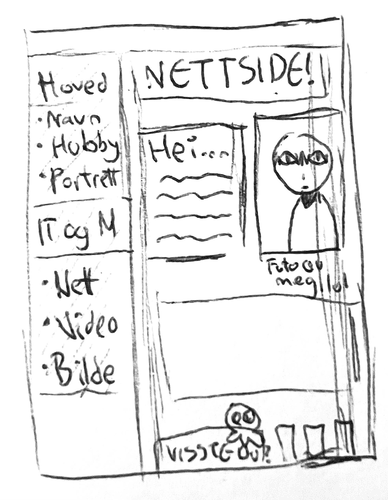
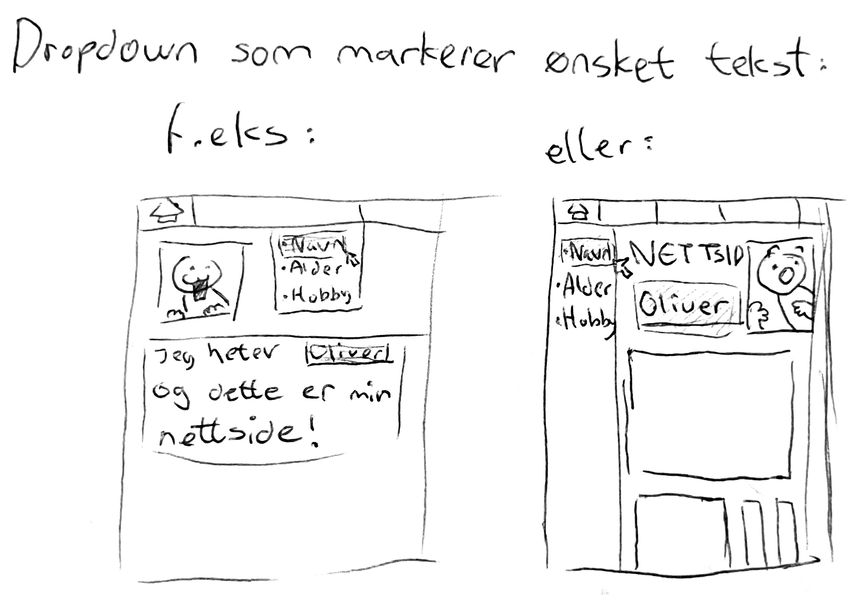

Hvorfor ser du dette?
Denne nettsiden ...
... ble skapt for å fremheve mine evner innenfor informasjonsteknologi og medieproduksjon, samtidig som den er en del av pensum
for de av oss som går IM på VG1.
Her tar jeg i bruk både kunnskap om utforming, fargevalg, design, brukervennlighet og
koding for å bringe fram en nettside som viser både mine evner og min personlighet.
Som du kanskje kan se allerede, er favorittfargen min lilla. Maskoten jeg skapte
til denne nettsiden, ikonet ved siden av tittelen til siden, er også i denne fargen,
og du kommer til å se mer av den om du klikker på riktig sted.
Hva var tanken?
Til info:
Jeg har aldri lagd en nettside i mitt liv,
så disse idéene kan virke litt “urrealistiske” for de som har lagd slike sider som dette før.
Idé nr. 1

Skisse laget av meg
Min første tanke var å utforme den slik som en blogg (eller det jeg tror en blogg ser ut som) med et bilde av meg selv på forsiden. Sidepanelet her var også ikke så bra sortert, fordi den viser informasjon som hadde vært synlig på forsiden eller en helt annen underside slik som min “om meg” underside gjør nå. Som du kanskje kan se, var maskoten min allerede en tanke ved første idé, det eneste den mangler fra sin nåværende versjon er stjernehalen sin. Den er plassert oppå en
“visste du?” tekstboks, noe som jeg kanskje vil implementere, men jeg må først tenke mer over hvor den kan plasseres og hvilken informasjon den vil gi. Kanskje informasjon om selve maskoten?
Idé nr. 2
Skisse laget av meg (igjen)
Noe jeg syns er mest interessant ved denne skissen er de tre kolonnene ved siden av “visste du?” tekstboksen. Disse er kun ment som dekorasjon, men jeg tror de også kunne gitt min nettside en god pause fra tekst og tekst og mer tekst, kanskje slik som det du leser her nå. Det eneste jeg vil si har blitt implementert fra denne første skissen på tidspunktet jeg skriver denne teksten er selve utformingen, altså både topp- og sidepanel med hovedinfo i midten.
Nå, jeg ville ikke kalt meg selv en gamer, men det er lov å låne litt estetikk. Derfor ville jeg ha en lasteskjerm (loading screen, om du insisterer). Min tanke var at det hadde gitt siden min mer personlighet, og jeg kan nå fortsatt implementere det, men det virket mer slitsomt enn brukbart om det var noe man måtte se hver gang man trykket på en ny underside. Den kan kanskje passe inn i spillundersiden, altså at den vises i noen sekunder mens spillundersiden “laster”, ellers bør jeg ikke inkludere den i det hele tatt. Skjønner du hvorfor jeg måtte legge til viktig info delen nå?
Nettsiden min skulle også originalt være mer arkade-inspirert, men mine ferdigheter når ikke så langt, så det ble dessverre ikke noe av.
Idé nr. 3

Skisse laget av meg (igjen x2)
Min siste idé… vel, den er ikke til å skryte av. Ikke bare er dette allerede en funksjon du kan bruke på PC-er (ctrl/cmnd+ F), men det er veldig lett å finne informasjon på en nettside om du orker å lese i mer enn to sekunder. Dette vil aldri bli implementert, og jeg vet ikke hva jeg tenkte på når jeg rablet dette. Det har blitt lagd flere skisser siden, men mitt metode har for det meste bare vært å se for meg det jeg vil ha og kode meg fram til det. Jeg har definitivt blitt bedre på nettsidelaging under hele denne prosessen, og det kan hende jeg aldri kommer tilbake til dette etter jeg er ferdig med VG1, men hvem vet?
Kanskje en gang iblant vil denne siden oppdateres bare fordi jeg ønsker det.